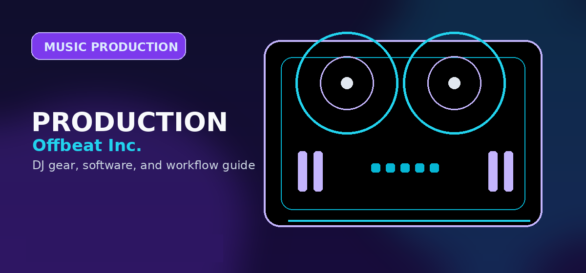

Music Production Tools
A resource hub for legacy production-tool links, routing DJ/producers into plugins, sample packs, MIDI controllers, DAWs, and distribution pages.

Production tools for DJ/producers
This page organizes production-tool topics and keeps them focused on production and release workflows. Use it for users who already want to produce, edit, remix, or release music.
The practical DJ/producer tool stack
A useful production setup is smaller than most beginners think. Start with a DAW, a clean sample library, headphones or monitors you understand, and a controller only if it speeds up writing. Plugins, sample subscriptions, and hardware become valuable after the core workflow is stable.
What to buy last
Buy specialty plugins, boutique sample packs, and additional controllers only after you have finished several drafts and can identify a repeatable bottleneck. Most unfinished music comes from workflow friction, not from missing one more synth, compressor, or drum pack.
Keep the stack small until songs are finished
Tool overload is one of the fastest ways for DJ/producers to stall. A compact setup is usually better: one DAW, one sample folder, one set of monitoring tools, and one controller if it improves speed. Add tools only when you can name the exact workflow problem they solve.
Good organization is part of the tool stack. Name projects clearly, keep exports in predictable folders, save stems when needed, and back up finished work. That matters more than owning another plugin bundle.
Practical checklist before moving on
- Define the immediate goal. Decide whether the next action is learning, buying, organizing, producing, releasing, or performing.
- Use the linked specialist guides. This page is a routing layer; the comparison and review pages contain the deeper buying or workflow decisions.
- Avoid unnecessary upgrades. Move to paid tools, new hardware, or new services only when they remove a specific bottleneck.
- Keep files organized. Clear folders, backups, metadata, and version names matter for DJing, production, and release workflows.
The best next page is the one that matches the task in front of you. Choose a controller only after considering software, choose software only after considering workflow, and choose release or promotion tools only after the music itself is ready.
Practical checklist before you decide
Use this page as one part of the decision, not the whole decision. Confirm the current price, software compatibility, operating-system support, and whether the option still fits the way you actually practice or perform.
- Fit: choose the option that matches your current workflow and the setup you expect to use for the next year.
- Compatibility: verify exact hardware, app, subscription, and file-format requirements before buying or switching.
- Reliability: avoid workflows that depend on one fragile adapter, one unstable app version, or an internet connection with no backup.
- Upgrade path: favor tools that can grow with you instead of forcing another purchase as soon as you start recording mixes or playing longer sets.
How to use this guide in a real DJ setup
Before changing gear, software, or workflow, connect the recommendation to an actual use case: home practice, recorded mixes, streaming, mobile events, club preparation, or production crossover. A choice that looks best on paper can still be wrong if it adds setup friction or does not match the way you will play.
The safest workflow is to test the setup exactly as you will use it, then document the cable path, software version, library source, and backup plan. That prevents most of the avoidable failures that happen when DJs buy the right-looking tool but never validate the whole system.
Official product and support pages
Use these official pages to confirm current specifications, software compatibility, and support details before buying.
How this guide fits
Use this guide for production tools and accessories. Use Music Production Software for DAW choice, and use plugin/sample guides when you need more specific recommendations.
Frequently Asked Questions
What production tool should I buy first?
Buy or learn a DAW first. After that, add a small MIDI controller, a few reliable plugins, and a manageable sample library only when you know what problem each tool solves.
Do I need expensive plugins to make music?
No. Stock DAW tools can handle most beginner production needs. Paid plugins become useful when they solve a specific workflow or sound-design problem.
Are sample packs worth buying?
Sample packs are useful when they fit a specific genre and are licensed clearly. Avoid collecting large libraries before finishing songs.
What should DJ/producers avoid buying early?
Avoid huge plugin bundles, duplicate synths, and expensive hardware before you have a repeatable writing and arrangement process.
Buy tools only after a bottleneck appears
The correct tool stack changes after you finish songs. If you cannot finish arrangements, buy nothing and learn your DAW. If your drums sound weak, improve sample choice before buying synths. If your mix collapses on other speakers, learn gain staging and EQ before buying mastering plugins. Each purchase should remove a proven bottleneck, not create a new menu of distractions.